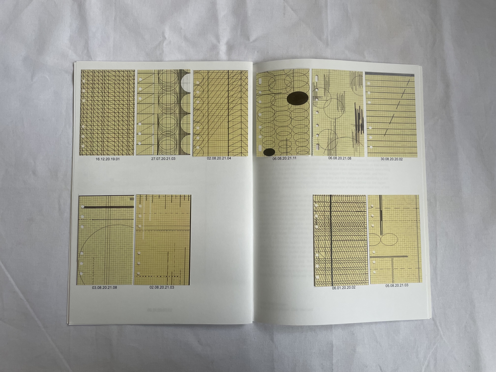
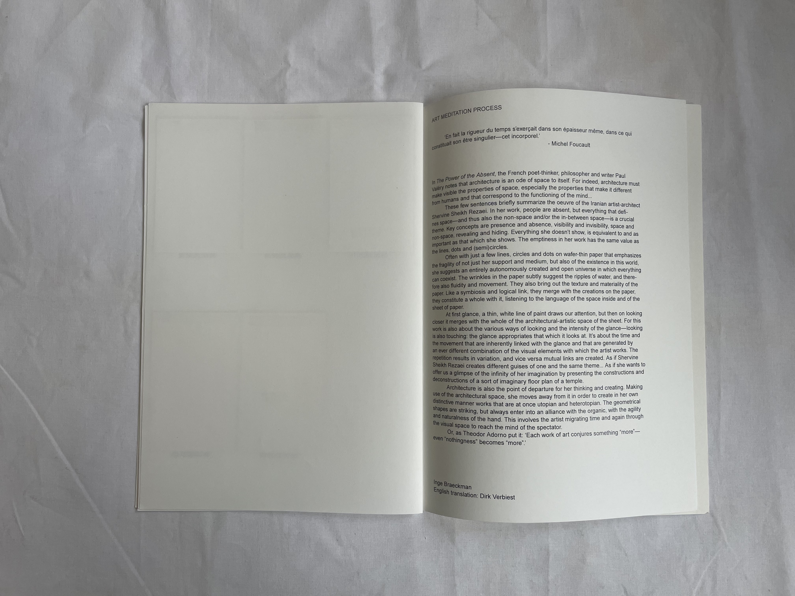
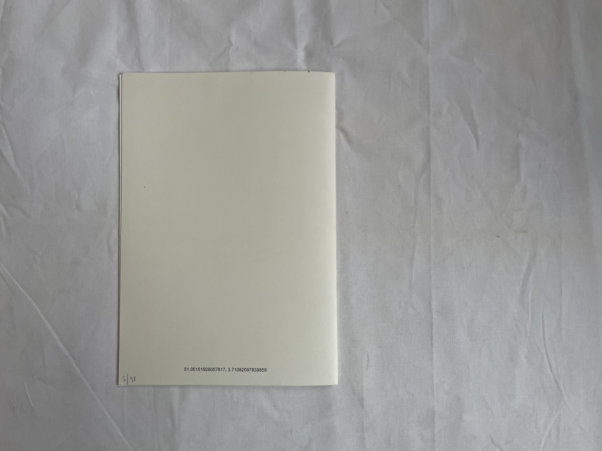
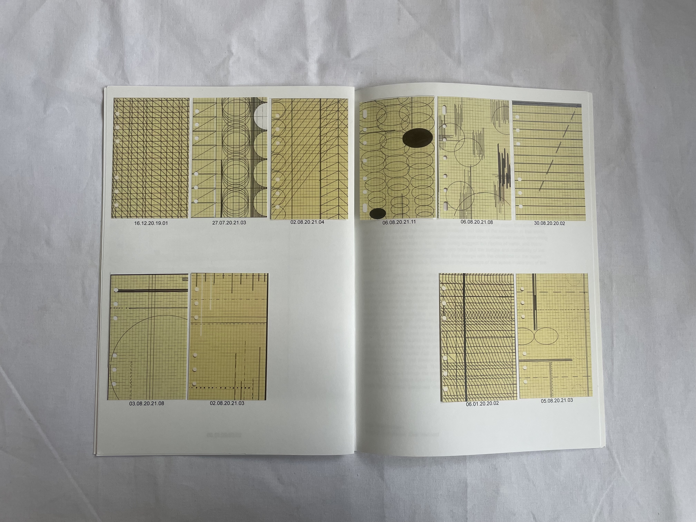
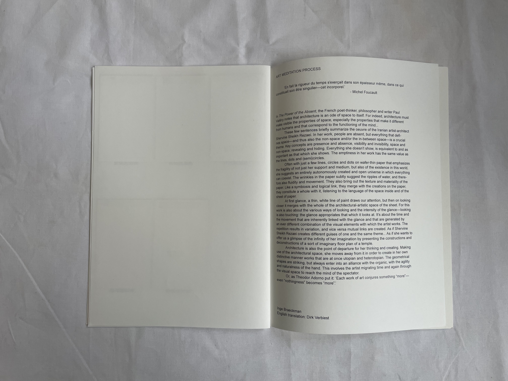
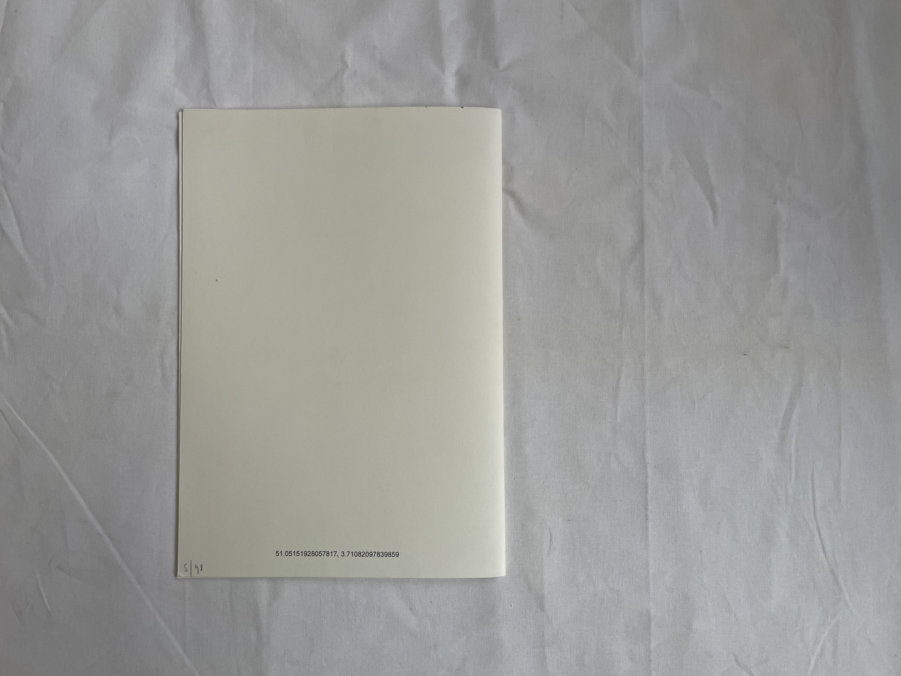

Virago, 2022
430 x 600 mm
3 layered silkscreen on cotton Gmund paper 240gr.
edition of 34 prints
€240 (vat/btw incl.) / for students: €180
Met dank aan de Vlaamse Overheid 
Artist book: I HAVE BEEN LIVING ALL MY LIFE DREAMING …
2023, January
38 pages
Black and white
Steilheid recycled n°2
Graphic design by Septian Priyatna
Pictures by Lars Duchateau
Text written by Shervin/e Sheikh Rezaei, Els Roelandt and Weronika Zalewska
€20

 
Artist book: ART MEDIATION PROCESS
2021, August
15 pages
Edition of 48 pieces
Collagework inside
Scans inside
Text written by Inge Braeckman
Graphic design by Shervin/e Sheikh Rezaei
€25

ENSEMBLE: drawing analyse
209 x 405 mm
silkscreenprint
edition of 25 prints
€50/print
ENSEMBLE: An Architecture of the Inbetween
2020, Art Paper Editions
Limited edition / (200 ed.)
book + small (36x58cm) silkscreen-print: €45
(27 ed.)
book + big (60,2x84cm) silkscreen-print: €70
24 x 33 cm, 136 p., ills b&w, paperback, English / Farsi
December 2020
Editing and design: 6’56”